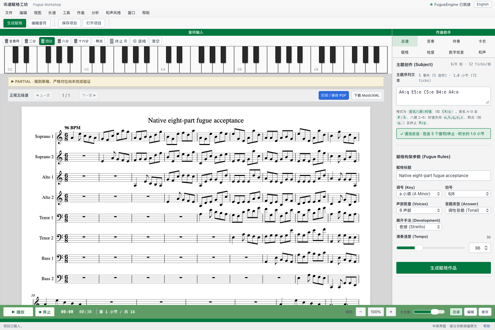
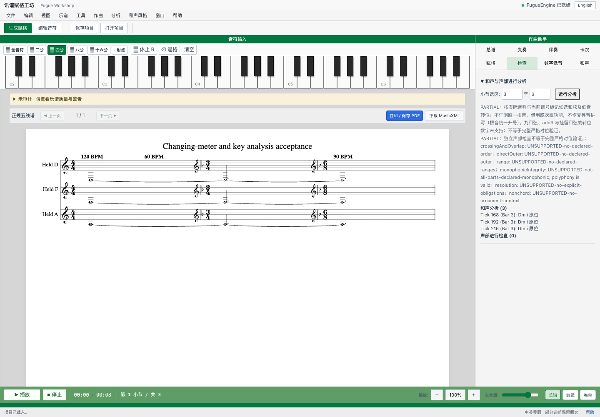
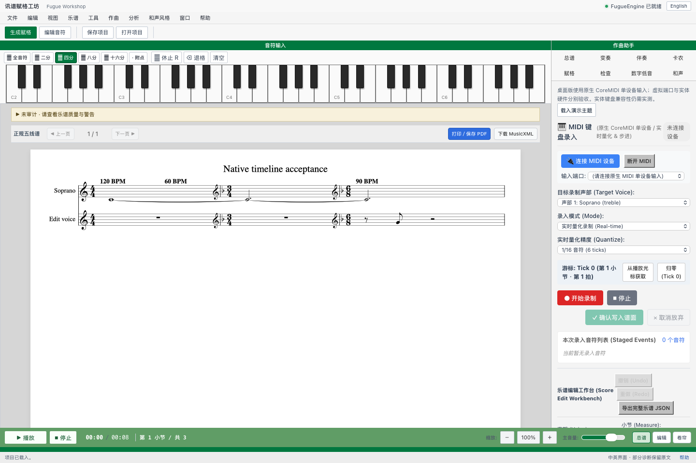

01 / COMPOSITION
Eight-part fugue draft
A 6/8 native-workshop experiment. The displayed PARTIAL warning indicates that strict counterpoint was not fully validated.

RESEARCH PREVIEW · MUSIC / SOFTWARE
A creative-workflow prototype for exploring fugue writing, notation and musical analysis.
01 — 03A 6/8 native-workshop experiment. The displayed PARTIAL warning indicates that strict counterpoint was not fully validated.

Analysis of a test score with meter and key changes. The original panel identifies partial coverage and unsupported checks.

A native notation preview with tempo changes and a MIDI input panel. No physical MIDI device is connected in this capture.
